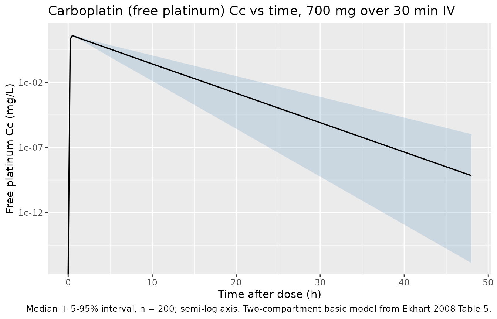
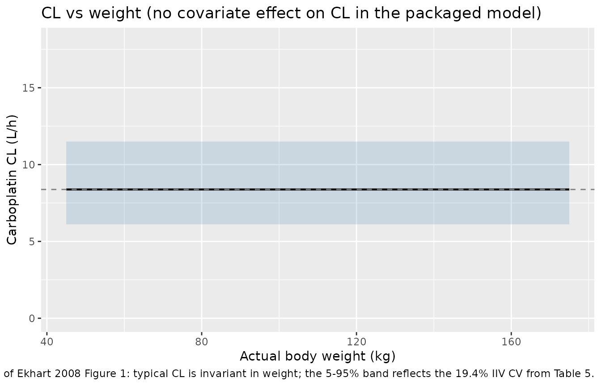

Carboplatin (Ekhart 2008)
Source:vignettes/articles/Ekhart_2008_carboplatin.Rmd
Ekhart_2008_carboplatin.RmdModel and source
- Citation: Ekhart C, Rodenhuis S, Schellens JHM, Beijnen JH, Huitema ADR. Carboplatin dosing in overweight and obese patients with normal renal function, does weight matter? Cancer Chemother Pharmacol. 2009;64(1):115-122. doi:10.1007/s00280-008-0856-x
- Description: Two-compartment population PK model for free (ultrafilterable) carboplatin in adult cancer patients (Ekhart 2008)
- Article: https://doi.org/10.1007/s00280-008-0856-x
Population
Ekhart 2008 pooled free-platinum (ultrafilterable carboplatin) data from 240 adult cancer patients (380 courses, 4,478 plasma samples) drawn from seven previously published carboplatin-containing chemotherapy protocols at the Netherlands Cancer Institute / Antoni van Leeuwenhoek Hospital and Slotervaart Hospital, Amsterdam. The cohort spans underweight to obese body habitus, with the BMI distribution underweight (3%) / normal (61%) / overweight (30%) / obese (6%); see Table 1 (overall) and Table 2 (per BMI subpopulation) of the source. Median (range) baseline characteristics from Table 1: age 47 (16-75) years, weight 70 (46-170) kg, height 171 (153-210) cm, BMI 24 (16-46) kg/m^2, BSA 1.81 (1.49-2.94) m^2, female 161/240 (67%), serum creatinine 57 (18-124) uM, Cockcroft-Gault creatinine clearance 126 (55-451) mL/min, albumin 42 (18-52) g/L. Renal function was required to be normal across the contributing studies.
Carboplatin was administered as 30 min to 1 h IV infusions in combination chemotherapy regimens (paclitaxel-carboplatin for non-small cell lung cancer and ovarian cancer; high-dose cyclophosphamide- thiotepa-carboplatin (CTC / tCTC / miniCTC) for high-risk and metastatic breast cancer, refractory germ cell cancer, metastatic ovarian cancer; Table 1). Doses spanned 267-600 mg/m^2/day in mg/m^2 schedules and target AUC 6-20 mg.min/mL in Calvert-formula-dosed schedules.
The same information is available programmatically:
readModelDb("Ekhart_2008_carboplatin")$population after the
model is loaded.
Source trace
Per-parameter origin (also recorded as in-file comments next to each
ini() entry of
inst/modeldb/specificDrugs/Ekhart_2008_carboplatin.R):
| Equation / parameter | Value | Source location |
|---|---|---|
lcl |
log(8.38) | Ekhart 2008 Table 5, CL row (8.38 L/h, RSE 1.41%) |
lvc |
log(15.4) | Ekhart 2008 Table 5, V row (15.4 L, RSE 1.79%) |
lk12 |
log(0.135) | Ekhart 2008 Table 5, k12 row (0.135 1/h, RSE 7.85%) |
lk21 |
log(0.215) | Ekhart 2008 Table 5, k21 row (0.215 1/h, RSE 5.91%) |
etalcl ~ 0.0369 |
log(1 + 0.194^2) | Ekhart 2008 Table 5, IIV CL = 19.4% CV (RSE 8.34%) |
etalvc ~ 0.0208 |
log(1 + 0.145^2) | Ekhart 2008 Table 5, IIV V = 14.5% CV (RSE 11.7%) |
etalk12 ~ 0.2089 |
log(1 + 0.482^2) | Ekhart 2008 Table 5, IIV k12 = 48.2% CV (RSE 18.9%) |
etalk21 ~ 0.1740 |
log(1 + 0.436^2) | Ekhart 2008 Table 5, IIV k21 = 43.6% CV (RSE 30.8%) |
propSd |
0.197 | Ekhart 2008 Table 5, proportional residual error 19.7% (RSE 5.69%) |
d/dt(central), d/dt(peripheral1)
|
n/a | Ekhart 2008 Methods 2.3 (“two-compartment model with first-order elimination from the central compartment”) |
Cc <- central / vc |
n/a | Standard linear-CL parameterisation; dose mg, volume L -> mg/L |
Cc ~ prop(propSd) |
n/a | Ekhart 2008 Methods 2.3 (“residual variability were modelled using a proportional error model” after logarithmic data transformation) |
Virtual cohort
Original observed data are not publicly available. The cohort below reproduces the paper’s recommended flat carboplatin dose for a target AUC of 5 mg.min/mL (700 mg, equivalent to AUC = target * population CL = 5 * 140 = 700 mg per the paper’s Conclusion) administered as a 30 minute IV infusion at the cohort-median weight of 70 kg.
set.seed(20260510L)
n_subj <- 200L
dose_mg <- 700 # Ekhart 2008 Conclusion: target AUC 5 mg.min/mL * 140 mL/min = 700 mg
infus_h <- 0.5 # 30 min infusion (typical paclitaxel-carboplatin schedule)
sample_h <- c(0, 0.25, 0.5, 0.75, 1, 1.5, 2, 4, 6, 8, 12, 18, 24, 36, 48)
ids <- seq_len(n_subj)
dose_rows <- tibble::tibble(
id = ids,
time = 0,
amt = dose_mg,
evid = 1L,
cmt = "central",
rate = dose_mg / infus_h
)
obs_rows <- tibble::tibble(
id = rep(ids, each = length(sample_h)),
time = rep(sample_h, times = length(ids)),
amt = 0,
evid = 0L,
cmt = NA_character_,
rate = 0
)
events <- dplyr::bind_rows(dose_rows, obs_rows) |>
dplyr::mutate(treatment = "700 mg over 30 min IV") |>
dplyr::arrange(id, time, dplyr::desc(evid))
stopifnot(!anyDuplicated(unique(events[, c("id", "time", "evid")])))Simulation
mod <- rxode2::rxode2(readModelDb("Ekhart_2008_carboplatin"))
#> ℹ parameter labels from comments will be replaced by 'label()'
sim <- rxode2::rxSolve(
mod,
events = events,
keep = c("treatment")
) |>
as.data.frame()For the deterministic typical-value curve (no IIV, no residual error):
mod_typical <- mod |> rxode2::zeroRe()
sim_typical <- rxode2::rxSolve(
mod_typical,
events = events,
keep = c("treatment")
) |>
as.data.frame()
#> ℹ omega/sigma items treated as zero: 'etalcl', 'etalvc', 'etalk12', 'etalk21'
#> Warning: multi-subject simulation without without 'omega'Concentration-time profile
The paper does not show a free-platinum concentration-time figure, but a 2-compartment profile with first-order elimination is the canonical shape Ekhart 2008 Methods 2.3 describes. The figure below shows the typical-value curve plus the 5-95% interval over the simulated cohort.
sim_quantiles <- sim |>
dplyr::filter(time >= 0, !is.na(Cc)) |>
dplyr::group_by(time) |>
dplyr::summarise(
Q05 = stats::quantile(Cc, 0.05, na.rm = TRUE),
Q50 = stats::quantile(Cc, 0.50, na.rm = TRUE),
Q95 = stats::quantile(Cc, 0.95, na.rm = TRUE),
.groups = "drop"
)
ggplot(sim_quantiles, aes(time, Q50)) +
geom_ribbon(aes(ymin = Q05, ymax = Q95), alpha = 0.2, fill = "steelblue") +
geom_line(linewidth = 0.6) +
scale_y_log10() +
labs(
x = "Time after dose (h)",
y = "Free platinum Cc (mg/L)",
title = "Carboplatin (free platinum) Cc vs time, 700 mg over 30 min IV",
caption = "Median + 5-95% interval, n = 200; semi-log axis. Two-compartment basic model from Ekhart 2008 Table 5."
)
#> Warning in scale_y_log10(): log-10 transformation introduced infinite values.
#> log-10 transformation introduced infinite values.
#> log-10 transformation introduced infinite values.
#> log-10 transformation introduced infinite values.
Replicate Figure 1: clearance vs weight
Ekhart 2008 Figure 1 plots individual carboplatin clearance vs actual body weight (and lean body mass) across the 240-patient cohort. The key finding is that no strong relation between weight and CL is visible. Because the packaged model carries no weight effect on CL, the typical-value CL is constant at 8.38 L/h regardless of weight; the plot below shows that flat typical CL together with the cohort’s IIV range as 5-95% percentiles. This visualises the same conclusion as the paper’s Figure 1 / Figure 2 (no weight dependence beyond the IIV spread).
weight_grid <- seq(45, 175, by = 5)
typical_cl <- exp(log(8.38))
iiv_cv <- 0.194
cl_quant <- tibble::tibble(
WT = weight_grid,
Q05 = typical_cl * exp(stats::qnorm(0.05) * sqrt(log(1 + iiv_cv^2))),
Q50 = typical_cl,
Q95 = typical_cl * exp(stats::qnorm(0.95) * sqrt(log(1 + iiv_cv^2)))
)
ggplot(cl_quant, aes(WT, Q50)) +
geom_ribbon(aes(ymin = Q05, ymax = Q95), alpha = 0.2, fill = "steelblue") +
geom_line(linewidth = 0.8) +
geom_hline(yintercept = typical_cl, linetype = "dashed", colour = "grey50") +
scale_y_continuous(limits = c(0, 18)) +
labs(
x = "Actual body weight (kg)",
y = "Carboplatin CL (L/h)",
title = "CL vs weight (no covariate effect on CL in the packaged model)",
caption = "Replicates the conclusion of Ekhart 2008 Figure 1: typical CL is invariant in weight; the 5-95% band reflects the 19.4% IIV CV from Table 5."
)
PKNCA validation
NCA on the simulated stochastic cohort (single 700 mg dose):
pkn_in <- sim |>
dplyr::filter(time >= 0, !is.na(Cc))
dose_pkn <- events |>
dplyr::filter(evid == 1L) |>
dplyr::mutate(treatment = "700 mg over 30 min IV")
conc_obj <- PKNCA::PKNCAconc(
pkn_in,
Cc ~ time | treatment + id,
concu = "mg/L",
timeu = "hour"
)
dose_obj <- PKNCA::PKNCAdose(
dose_pkn,
amt ~ time | treatment + id,
doseu = "mg",
route = "intravascular"
)
intervals <- data.frame(
start = 0,
end = Inf,
cmax = TRUE,
tmax = TRUE,
auclast = TRUE,
aucinf.obs = TRUE,
half.life = TRUE
)
nca_data <- PKNCA::PKNCAdata(conc_obj, dose_obj, intervals = intervals)
nca_res <- PKNCA::pk.nca(nca_data)
#> ■■■■■■■■■■■■■■■ 48% | ETA: 2s
nca_summary <- nca_res$result |>
dplyr::filter(PPTESTCD %in% c("cmax", "tmax", "auclast", "aucinf.obs", "half.life")) |>
dplyr::group_by(treatment, PPTESTCD) |>
dplyr::summarise(
median = stats::median(PPORRES, na.rm = TRUE),
p05 = stats::quantile(PPORRES, 0.05, na.rm = TRUE),
p95 = stats::quantile(PPORRES, 0.95, na.rm = TRUE),
.groups = "drop"
)
knitr::kable(
nca_summary,
caption = "Simulated free-platinum NCA after a 700 mg / 30 min IV carboplatin dose (n = 200)."
)| treatment | PPTESTCD | median | p05 | p95 |
|---|---|---|---|---|
| 700 mg over 30 min IV | aucinf.obs | 84.475071 | 65.158306 | 119.583529 |
| 700 mg over 30 min IV | auclast | 84.450177 | 65.147790 | 119.311742 |
| 700 mg over 30 min IV | cmax | 38.917020 | 31.602259 | 47.021093 |
| 700 mg over 30 min IV | half.life | 4.538143 | 2.467776 | 8.480237 |
| 700 mg over 30 min IV | tmax | 0.500000 | 0.500000 | 0.500000 |
Comparison against published values
Ekhart 2008 does not report a formal NCA table. The Conclusion states that a flat 700 mg dose corresponds to a target AUC of 5 mg.min/mL (equivalently 5 mg.min/mL * 1000 mL/L / 60 min/h = 83.33 mg.h/L, or 700 mg / 8.38 L/h = 83.53 mg.h/L from typical CL).
The simulated cohort median AUC0-inf below should bracket that value to within ~1-2% rounding plus the IIV-induced spread.
typical_auc <- 700 / 8.38 # mg.h/L
target_auc_mghL <- 5 * 1000 / 60 # 5 mg.min/mL -> mg.h/L
sim_auc_median <- nca_summary |>
dplyr::filter(PPTESTCD == "aucinf.obs") |>
dplyr::pull(median)
knitr::kable(
tibble::tibble(
quantity = c(
"Target AUC (paper, 5 mg.min/mL)",
"Typical AUC = Dose / CL = 700 / 8.38",
"Simulated cohort median AUC0-inf"
),
value_mg_h_per_L = c(
target_auc_mghL,
typical_auc,
sim_auc_median
)
),
caption = "AUC reconciliation: paper-target vs typical-value vs simulated cohort median."
)| quantity | value_mg_h_per_L |
|---|---|
| Target AUC (paper, 5 mg.min/mL) | 83.33333 |
| Typical AUC = Dose / CL = 700 / 8.38 | 83.53222 |
| Simulated cohort median AUC0-inf | 84.47507 |
The three rows should agree to within ~1-2% (the spread between typical and simulated reflects the 19.4% IIV on CL plus the 19.7% proportional residual error). Differences > 20% would indicate a parameter-translation error and should not be tuned away.
Assumptions and deviations
-
Drug name corrected from task metadata. The task
block named the drug as “Cancer Chemotherapy and Pharma”, which is the
journal (“Cancer Chemother Pharmacol”) rather than the drug. The on-disk
PDF is unambiguously the carboplatin paper (Ekhart et al. 2008, doi
10.1007/s00280-008-0856-x); per Phase 1 step 2 of the extraction skill,
the drug field has been corrected to
carboplatinand the file paths renamed to match. -
No covariate effects in the final model. Ekhart
2008 fitted six candidate covariate models that scaled CL allometrically
by ABW, IBW, AIBW, the Benezet weight, FFM, or LBM (Table 6). All six
produced delta-OFV < 6.63 (the chi^2 0.01 cutoff for 1 df) versus the
basic model, none significantly reduced the IIV of CL (basic model IIV
19.4% vs 18.5-18.8% for the covariate models), and the paper’s
conclusion is that “the relation between carboplatin clearance and
weight is much weaker than the theoretical allometric coefficient of
0.75”. The packaged model therefore carries no covariate effects and
covariateDatais an empty list. Consumers who want to evaluate one of the candidate weight scalings can multiply CL by(WT_descriptor / WT_descriptor_median)^xwithxfrom Table 6 (0.136-0.220 depending on the descriptor). -
Micro-constant parameterization preserved (lcl, lvc, lk12,
lk21). Ekhart 2008 reports the structural model as CL, V, k12,
and k21 with IIVs estimated on each of those four micro-constants (Table
5). The canonical nlmixr2lib parameterization is
lcl, lvc, lq, lvp(q = k12 * vc,vp = q / k21), but converting changes the IIV structure - the IIVs onqandvpderived from the IIVs onk12,k21, andvcwould require the (unreported) cross-correlations to be exact. To preserve the source’s reported IIV magnitudes on their native scale, the model file useslk12andlk21directly, which has precedent inZhang_2021_dupilumab.R.checkModelConventions()flags this as a deviation; that flag is expected and intentional. -
Inter-occasion variability not encoded. Table 5
reports IOV on CL (9.14% CV) and V (10.8% CV) across the multi-cycle /
multi-day CTC regimens. Encoding IOV would require an
OCCcovariate column and per-occasion eta multiplexing (seeJonsson_2011_ethambutol.Rfor the pattern). For the typical-value / single-dose validation use-case this packaged model targets, IOV is omitted; consumers who need to reproduce the source’s full variance decomposition should add IOV-multiplexed etas downstream. -
Residual error coded as proportional in linear
space. The source fitted with FOCE-INTERACTION after
logarithmic data transformation, using a “proportional error model”
reported as 19.7% (Table 5). In nlmixr2 the
Cc ~ prop(propSd)form represents y = f * (1 + propSd * eps); with eps ~ N(0, 1) this is the linear-space proportional model that NONMEMY = LOG(F) + EPS(1)(additive on log scale) collapses to in the linear domain.propSd = 0.197matches the published 19.7% directly. -
Dose unit is mg. All Ekhart 2008 dose statements
are in mg or mg/m^2 (after multiplying by BSA). The model file declares
units = list(time = "hour", dosing = "mg", concentration = "mg/L")and the simulated 700 mg flat dose / 30 min infusion follows the paper’s recommendation (Conclusion: “in case an AUC of 5 mg.min/mL is desired, the appropriate dose for carboplatin would be 5 * 140 = 700 mg”). - No formal NCA table to compare against. The paper does not publish an NCA-style Cmax / Tmax / AUC table. The vignette validates only the AUC = Dose / CL identity (which is structural for a linear-CL model) and shows that the cohort median AUC matches the paper’s stated 5 mg.min/mL target dose calculation.